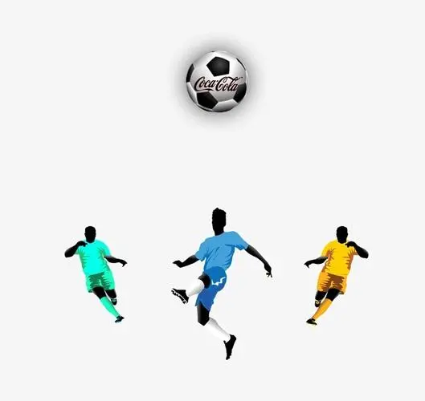

国际足联锦标赛
国际足联简介
女子足球
社会影响
足球发展
法律
世界范围

据世卫组织统计，80%的儿童运动量不足。 这就是为什么国际足联、世界卫生组织、
卡塔尔卫生部以及交付和遗产最高委员会正在合作实施#BringTheMoves倡议。
已经从 每天60分钟的锻炼提高了生活质量 这就是为什么我们发起了一项挑战，
激励世界各地的儿童搬家。 是#BringTheMoves的时候了！
本周移动
最佳动作将在卡塔尔举行的2022年国际足联世界杯上进行
♫ 和显示在本页上。
也许你的动作也会被选中！
因此，继续前进，并根据需要增加尝试次数#
BringTheMoves是一种很好的活动方式。
模具挑战:
活跃起来，创造新的进球欢呼，挑战你最喜欢的球员#BringTheMoves。
观看最成功动作的视频，并创造自己的动作。 这很简单!
- 发明你的动作
- 在手机上录制
- 上传到社交媒体
- 别忘了给足球运动员加标签，并使用标签#BringTheMoves。